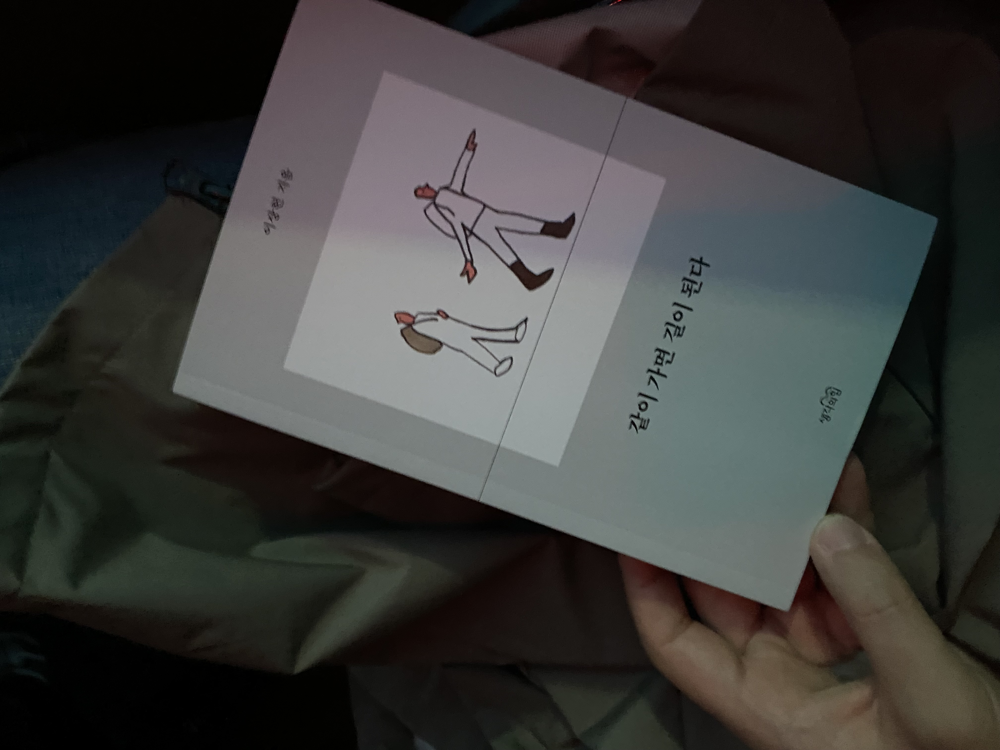

[독후감] 같이 가면 길이 된다
나의 아버지는 포크레인을 몬다. 그래서일까, 이 작은 책 속의 이야기는 낯설지 않다. 임금체불을 겪는 모습을 어린 날의 내가 기억하는 것만도 세 번이다. 아니, 다섯 번이던가, 아니아니, 작년에도 노동청 가겠다고 윽박지른 뒤에야 돈을 받아 냈다는 말을 들었는데? 어린 시절 어느 날엔 회사를 부도 낸 사장을 쫓아갔다는 말도 들은 적 있다. 아마도 몇 단계의 하청을 타고 내려온 맨 끄트머리 사장이었겠지.
언젠가 성인이 된 나와 술잔을 기울이던 그가 ‘일이 무섭다’라고 이야기한 적이 있었다. 특히 건물을 올리기 위해 땅을 파고 내려가는 터 파기 작업은 정말 하기 싫다고, 안전을 담보할 제대로 된 구조물 없이 작업하는 곳이 정말 많다고, 어느 한 곳 무너져 흙이 쏟아지면 그대로 장비와 함께 묻히는 거라고. 건물이 높으면 그만큼 깊게 파들어 갈까, 저 높은 빌딩을 올리기 위해 얼마나 많은 이들이 얼마나 깊이 파 내려갔을까, 아버지에게서 그 말을 들은 뒤 높은 건물을 볼 때면 이런 생각을 한다.
본문 첫 글은 냄새를 주제로 한다. 그의 글에서 자주 등장하는 표현은 땀내, 땀 냄새다. 앞의 말을 하기 몇 해 전, 장비기사 수입만으론 어려웠던 아버지는 엄마는 장사를 했다. 우리 집과 내 옷에선, 내 몸에선 족발 장국 냄새가 났다. 그리고 다시 몇 해 뒤엔 두부공장을 했다. 밤새 일손을 거들고 나면 옷과 몸에 비릿한 콩 냄새가 뱄다. 그 냄새들은 지은이가 옮겨온 조지 오웰의 말대로 ‘하층 계급의 냄새’였을까?
그 냄새들은 이제 흐릿하다. ‘가난의 냄새‘라 생각하며 부끄러워하던 순간이 분명 내겐 있었다. 지나고 나니 냄새도, 냄새를 둘러싼 기억도 다행히 휘발되었지만. 그렇지만 자기가 하는 일을 무섭다 했던 아버지의 그 말은 희미해지지 않는다. 처자식 앞에서 그 말을 하는 아비의 심정은 어땠을까. 당시엔 지나가는 말이라 생각했지만, 아니었다. 흐르지 않고 내 머릿속 한 곳에 고였다.
아버지에게도 아니었던 모양이다. 코로나19로 일이 없던 때, 이제는 정말 그 일을 그만하겠다며 배관과 용접 관련 자격 시험을 연달아 봤다. 꽤 높은 급의 자격증을 땄고, 그 분야에서 잠시 일했다. 하지만 그런 그는 지금 다시 장비에 오른다. 배운 게 도둑질이라고, 평생 해 온 그 일 만큼 그를 대우해 주는 곳은 없었으리라.
그래서 나는 한켠에 고인 그 말을 여전히 흘려보내지 못한다. ‘매몰’이라는 뉴스 속보를 볼 때면 철렁할 수밖에. 파 묻히는 것만 걱정일까. 크레인이 쓰러졌다더라, 장비에 치였다더라, 구조물에 깔렸다더라 도처에서 죽음의 소식이 들려온다. “사람들이 날마다 우수수우수수 낙엽처럼 떨어져서 땅바닥에 부딪쳐 으깨”진다.(김훈) 우리는 과연 언제쯤 이 죽음의 행렬을 멈출 수 있을까.

이상헌, 같이 가면 길이 된다, 생각의힘(2023.04.07. 출간)